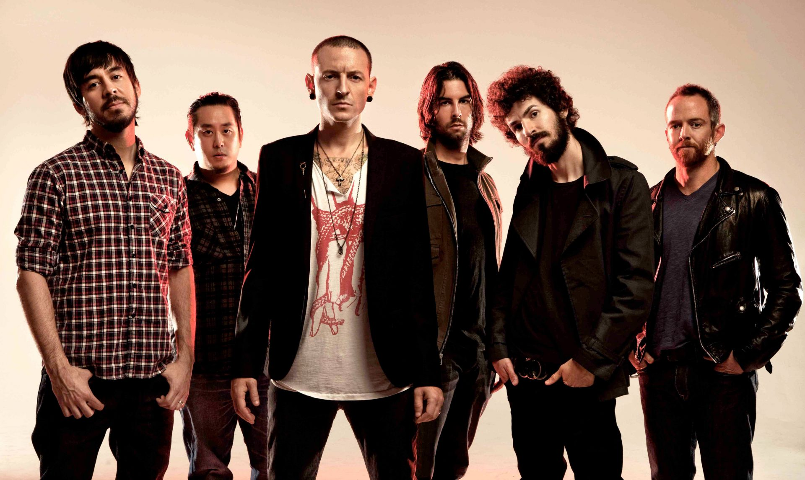
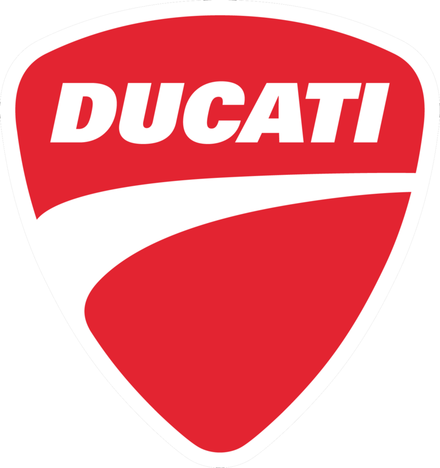

Uma História
Imagine-se na estrada, a sensação de liberdade envolvente, enquanto o sol brilha intensamente e você está no comando da sua Aprilia RSV4. O motor potente e o rugido inconfundível são a introdução perfeita para a trilha sonora da sua viagem. Com as primeiras notas de "Cursed" de Juice WRLD começando a tocar no seu capacete, a melodia profunda e emocional se mistura com o som da moto, criando uma harmonia perfeita entre você e a estrada. À medida que você se embrenha na jornada, a pista se torna uma extensão de sua alma. A Ducati Panigale V4S aguenta o ritmo enquanto "Here We Go Again" ecoa, fazendo cada curva se transformar em um movimento coreografado com a música. A sensação de flutuar entre a realidade e a fantasia é palpável, e a estrada parece dançar com você, guiada pelo som envolvente e poderoso de Juice WRLD. Conforme o dia avança e a necessidade de uma máquina para altas velocidades surge, você se encontra acelerando com a Yamaha R1 M. "Fall" começa a tocar, e a batida intensa de Juice WRLD intensifica a sensação de velocidade e liberdade. A combinação do som da moto e da música faz com que cada quilômetro se sinta como uma celebração, com a Yamaha dominando a estrada com uma confiança sólida. A estrada se torna ainda mais cativante quando você faz uma troca estratégica para a Suzuki GSX-R1000RR, pronta para enfrentar um trecho mais técnico. A melodia de "Take Me Home" de Juice WRLD surge, oferecendo um tom mais calmo e melancólico que combina com o ritmo da estrada enquanto você reflete sobre a jornada e o impacto profundo que ela teve em você. A suavidade da música proporciona um espaço para a introspecção, contrastando com a intensidade anterior, e a Suzuki continua a oferecer desempenho confiável e inspirador. À medida que a noite se aproxima e a estrada se ilumina sob a luz dos faróis, você decide mudar para a KTM 1290 Duke. O punk agressivo de Slipknot entra em cena, e a intensidade da música se reflete na agressividade e na performance da moto. A sensação de superar desafios e enfrentar novas adversidades é enriquecida pela força da música e pela robustez da KTM. Quando chega o momento de refletir sobre a jornada, "Shattered Dreams" de Juice WRLD embala o final do dia, enquanto você passeia com a sua Honda CB 1000 Barracuda. A melodia suave e introspectiva da música proporciona um espaço para contemplar as experiências vividas e os laços de amizade que se fortaleceram ao longo do caminho. Compartilhar essa aventura com amigos torna cada momento ainda mais especial, e as histórias e risadas trocadas durante a viagem criam memórias inesquecíveis. O ritmo hipnótico de Travis Scott, o estilo inconfundível de Post Malone, a intensidade de Eminem e a inovação de Kanye West complementam a experiência, enquanto você percorre os últimos quilômetros com a Ducati Superleggera. Cada artista traz uma nova camada à viagem, fazendo com que a estrada e a música se tornem um espetáculo contínuo de emoções e descobertas. Viajar de moto é mais do que uma simples jornada; é uma celebração da vida, da amizade e da pura alegria de estar vivo. Cada troca de moto, cada faixa de música e cada quilômetro percorrido são partes essenciais de uma experiência que combina adrenalina, prazer e conexão. É uma terapia que te liberta, te renova e te lembra do poder da liberdade e da música. Então, se você ainda não experimentou a magia de uma viagem de moto com uma trilha sonora épica, está na hora de sentir essa sinfonia em movimento e descobrir por si mesmo o que realmente significa viver plenamente.
Motos Citadas
Aprilia RSV4
Proposta: A Aprilia RSV4 é uma moto esportiva de alta performance, projetada para oferecer uma experiência de pilotagem excepcional tanto em pista quanto em estrada.
Características:
Motor: V4 de 1.099 cc, com cerca de 217 cv de potência, que proporciona aceleração impressionante e alta velocidade.
Suspensão: Equipada com suspensão Ohlins, oferecendo excelente controle e estabilidade em curvas e alta velocidade.
Tecnologia: Inclui modos de pilotagem ajustáveis, controle de tração, ABS e quickshifter, garantindo uma performance personalizada e segura.
Design:Estrutura em alumínio e aerodinâmica avançada, visando maximizar a velocidade e a eficiência aerodinâmica.

Ducati Panigale
Proposta: A Ducati Panigale V4S é uma moto esportiva de topo de linha, focada em oferecer desempenho extremo e um design sofisticado.
Características:
Motor:V4 de 1.103 cc, com aproximadamente 214 cv, é conhecido por sua resposta rápida e potência avassaladora.
Suspensão: Suspensão Ohlins eletronicamente ajustável, proporcionando uma excelente adaptação ao tipo de pista e condições de pilotagem.
Tecnologia:Equipado com um sistema de controle de tração e ABS, controle de deslize e diversos modos de pilotagem, otimizando a performance e segurança.
Design:Design agressivo e elegante, com foco na aerodinâmica e no estilo, oferecendo um visual de corrida e desempenho de pista.

Yamaha R1 M
Proposta: A Yamaha R1 M é uma moto esportiva de alta performance que combina tecnologia de ponta com um design focado em pista, mas também versátil para a estrada.
Características:
Motor: Inline-4 de 998 cc, com cerca de 200 cv, que proporciona uma aceleração rápida e um desempenho sólido.
Suspensão: Suspensão Öhlins de alta performance, com ajustes eletrônicos que se adaptam às condições de pilotagem.
Tecnologia: Inclui sistema de controle de tração, ABS, quickshifter e controle de deslize, permitindo uma pilotagem segura e personalizada.
Design: Foco na aerodinâmica e no estilo de corrida, com um design que maximiza o desempenho e a eficiência.
Suzuki GSX-R1000RR
Proposta:A Suzuki GSX-R1000RR é uma moto esportiva desenvolvida para oferecer um equilíbrio entre desempenho de pista e uso diário, ideal para pilotos que buscam uma experiência completa de esportiva.
Características:
Motor:Inline-4 de 999 cc, com cerca de 202 cv, conhecido por sua potência e resposta rápida.
Suspensão: Suspensão ajustável, projetada para fornecer um excelente desempenho em pistas e em estradas.
Tecnologia:Equipado com sistema de controle de tração, ABS e modos de pilotagem, oferecendo uma pilotagem refinada e controlada.
Design: Design focado em aerodinâmica e eficiência, com um visual agressivo que reflete seu desempenho.
KTM 1290 Duke
Proposta:A KTM 1290 Duke é uma moto naked de alta performance, projetada para oferecer uma experiência de pilotagem poderosa e versátil tanto em ambientes urbanos quanto em estradas abertas.
Características:
Motor: V2 de 1.301 cc, com cerca de 180 cv, oferecendo uma entrega de potência robusta e torque significativo.
Suspensão: Suspensão ajustável de alta qualidade, proporcionando um equilíbrio entre conforto e controle em diferentes condições de pilotagem.
Tecnologia:Inclui controle de tração, ABS e modos de pilotagem, permitindo uma adaptação fácil a diferentes estilos e condições de pilotagem.
Design:Design agressivo e moderno, com um foco na funcionalidade e no estilo urbano, tornando-a ideal para a cidade e para estradas abertas.
Honda CB 1000R Barracuda
Proposta:A Honda CB 1000R Barracuda é uma naked de alta cilindrada que oferece um equilíbrio entre performance esportiva e conforto, ideal para o uso diário e passeios longos.
Características:
Motor:Inline-4 de 998 cc, com cerca de 143 cv, conhecido por sua suavidade e potência suficiente para uma pilotagem emocionante.
Suspensão:Suspensão ajustável, focada em proporcionar conforto e controle em diferentes tipos de terreno.
Tecnologia:Equipado com modos de pilotagem e controle de tração, oferecendo um desempenho confiável e adaptável.
Design:Design moderno e agressivo, com um foco em estilo e ergonomia, oferecendo um visual imponente e conforto para uso diário.
Ducati Superleggera V4
Proposta: A Ducati Superleggera V4 é uma moto esportiva ultraleve e de alta performance, projetada para oferecer o máximo em desempenho e exclusividade.
Características:
Motor:V4 de 998 cc, com aproximadamente 224 cv, oferecendo um desempenho extremo e uma aceleração impressionante.
Suspensão:Suspensão Ohlins ajustável, que proporciona uma performance de pista de alto nível e um controle excepcional.
Tecnologia:Equipado com as últimas inovações em controle de tração, ABS e modos de pilotagem, garantindo uma performance excepcional e adaptada às necessidades do piloto.
Design:Construída com materiais leves e tecnologia de ponta, proporcionando um visual exclusivo e desempenho superior.
Cada uma dessas motos foi projetada com uma proposta específica em mente, atendendo a diferentes necessidades e estilos de pilotagem. Desde a potência e a precisão das motos esportivas até a versatilidade e conforto das naked e roadsters, há uma moto para cada tipo de aventura e preferência.
Artistas E Musicas
Juice WRLD
Sobre: Juice WRLD, cujo nome real é Jarad Higgins, foi um rapper e cantor americano que ganhou fama por suas músicas emocionais e introspectivas, misturando rap com melodias de canto. Sua carreira, embora breve, deixou uma marca significativa na cena musical.
Músicas Citadas:
"Cursed": Uma faixa não lançada oficialmente que exemplifica a abordagem lírica de Juice WRLD sobre questões emocionais e pessoais. A música é conhecida por suas letras melancólicas e a expressão de sentimentos complexos. "Here We Go Again": Outra faixa não lançada oficialmente, que mostra o estilo característico de Juice WRLD de combinar rap com melodias suaves e introspectivas, refletindo sobre os altos e baixos da vida. "Fall": Esta música não lançada tem uma vibe emocional e contemplativa, típica do trabalho de Juice WRLD, abordando temas de amor, perda e introspecção. "Take Me Home": Uma faixa que transmite um sentimento de nostalgia e busca por conforto, com uma melodia mais tranquila e reflexiva. "Shattered Dreams": Outra faixa não lançada que mergulha em temas de desilusão e esperanças quebradas, destacando o estilo emocional e profundo de Juice WRLD.

Slipknot
Sobre: Slipknot é uma banda americana de metal conhecida por suas performances intensas e seu estilo agressivo. Formada em 1995, a banda é conhecida por suas máscaras distintivas e som pesado que combina metal, nu-metal e outros subgêneros.
Música Citada:
"Psychosocial": Esta faixa é um exemplo clássico do som agressivo e enérgico de Slipknot, com uma mistura de riffs pesados e letras poderosas que exploram temas de frustração e rebelião.
Travis Scott
Sobre: Travis Scott, cujo nome real é Jacques Berman Webster II, é um rapper e produtor musical americano conhecido por seu estilo inovador e influente. Ele mistura elementos de rap, trap e música eletrônica, criando um som único e moderno.
Música Citada:
"SICKO MODE": Uma das faixas mais populares de Travis Scott, conhecida por sua produção multifacetada e pela combinação de vários estilos musicais, criando uma experiência auditiva dinâmica e envolvente.
2wei
Sobre: 2wei é um duo de produtores e compositores alemães conhecido por suas reinterpretações cinematográficas e emocionantes de músicas populares. Eles são conhecidos por transformar músicas conhecidas em versões orquestrais e dramáticas.
Música Citada:
"Lux Aeterna": Embora não seja uma faixa original de 2wei, eles são conhecidos por criar covers e remixes que possuem uma qualidade épica e cinematográfica, muitas vezes adicionando profundidade emocional às músicas originais.
Linkin Park
Sobre: Linkin Park é uma banda americana de rock alternativo formada em 1996, conhecida por sua fusão de rock, nu-metal e eletrônica. A banda é famosa por suas letras emotivas e a combinação de rap e canto em suas músicas.
Música Citada:
"Numb": Uma das faixas mais icônicas da banda, abordando temas de frustração e isolamento, com um som que combina elementos de rock e música eletrônica.

Post Malone
Sobre: Post Malone, cujo nome real é Austin Richard Post, é um rapper e cantor americano que se destacou por seu estilo eclético que mistura rap, pop e rock. Ele é conhecido por suas letras cativantes e sua voz distintiva.
Música Citada:
"Circles": Uma das músicas mais conhecidas de Post Malone, que combina uma melodia suave com letras introspectivas, refletindo sobre relacionamentos e a complexidade emocional.
Eminem
Sobre: Eminem, cujo nome real é Marshall Bruce Mathers III, é um dos rappers mais influentes e bem-sucedidos de todos os tempos. Conhecido por suas letras contundentes e técnicas de rap excepcionais, Eminem tem uma carreira marcada por sucessos e controvérsias.
Música Citada:
"Lose Yourself": Uma faixa motivacional e poderosa que se tornou um hino para muitos, destacando a habilidade de Eminem em criar letras impactantes e inspiradoras.

Kanye West
Sobre: Kanye West é um rapper, produtor e designer americano, conhecido por sua inovação musical e impacto cultural. Sua carreira é marcada por sua capacidade de experimentar e redefinir os limites da música hip-hop e pop.Música Citada:
"Stronger": Uma faixa que combina elementos de hip-hop e música eletrônica, mostrando o talento de Kanye West para criar hits inovadores e energéticos.
Cada um desses artistas e suas músicas contribuem para uma trilha sonora variada e envolvente, que adiciona profundidade emocional e uma dimensão única à experiência de viajar de moto.
- 